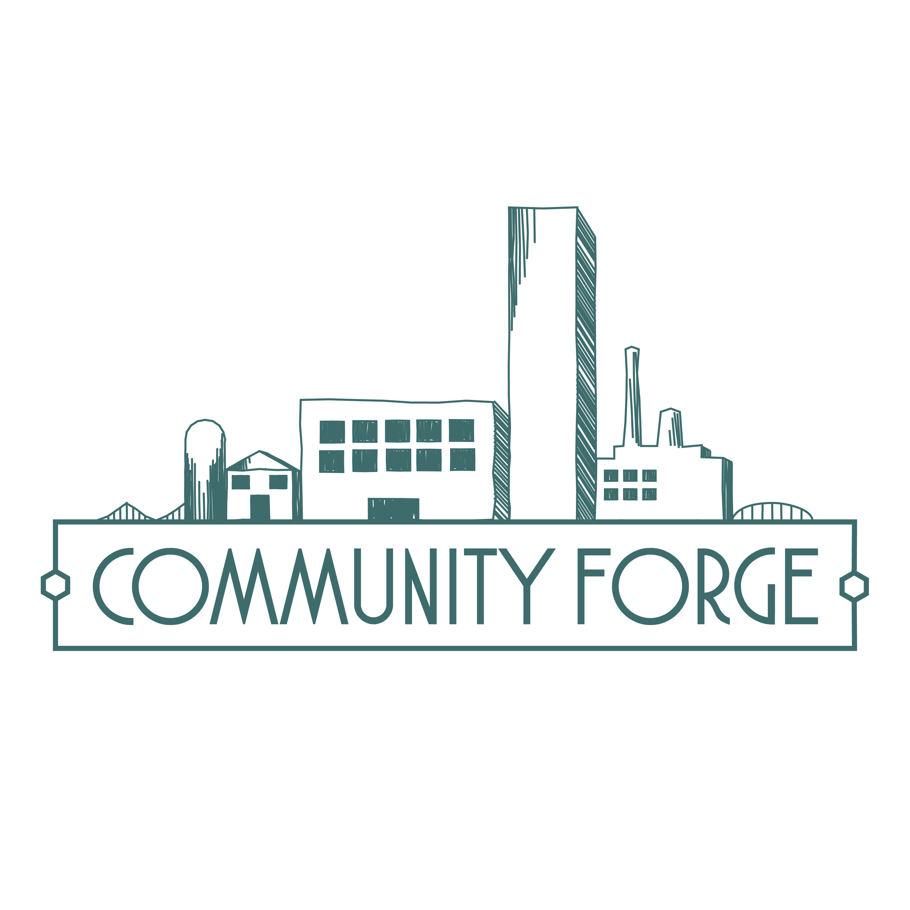
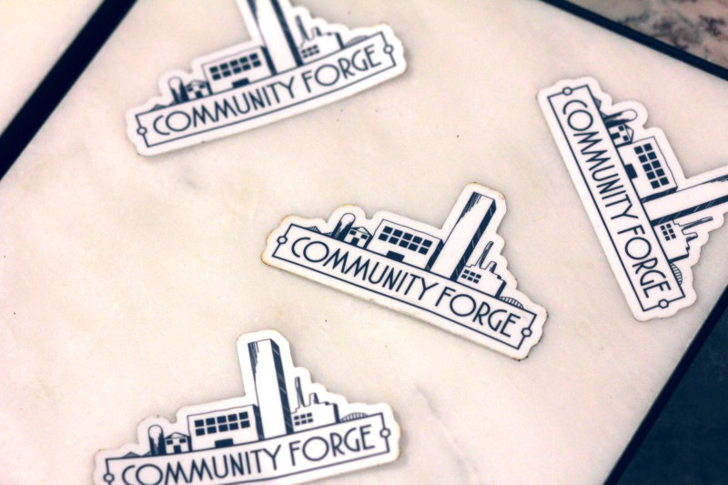
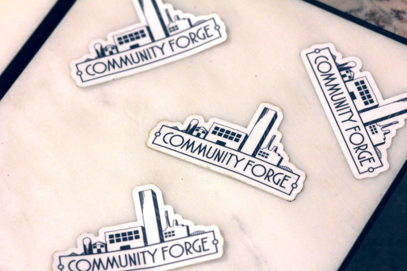

Community Forge
[ Logo, branding ]
A community center for underprivilege students and families to access extracurricular activities and safe spaces.
[ Rough drafts ]


[ Final logo ]

 

[ Objectives ]
• Conceptualize with ideas and visuals provided by the founders.
• Create a style guide of colors, fonts, and a theme.
• Design rough drafts to be voted on by investors.
• Finalize the logo and vectorize icons for collateral.